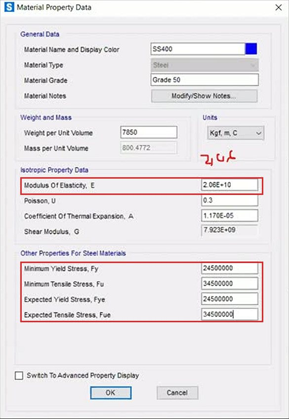

Bài 2.2. Khai báo vật liệu Defining steel materials
Vật liệu thép trong SAP2000 khai báo ở Region = User với $E$, $F_y$, $F_u$ đúng theo tiêu chuẩn thiết kế và theo chiều dày bản thép.
- Khai báo vật liệu Q345B, SS400, Q235B với các thông số ở Bảng 2.1.
- Chọn $E$ theo nhánh tiêu chuẩn; tạo vật liệu riêng cho bản dày.
1. Tình huống
Bản vẽ nhà xưởng Hòa Bình ghi thép SS400 cho cột, kèo; một số bản mã chân cột dày 20 mm bằng Q345B. Mô hình kiểm tra theo TCVN 5575:2024, còn nhà máy DNP cùng văn phòng lại kiểm tra theo AISC 360-10. Hai mô hình cần hai bộ vật liệu khác nhau ở $E$ và $F_y$.
2. Nội dung chính
Vật liệu
Define → Materials → Add New Material.
- Region: chọn User. Material Type: Steel.
- Nhập Weight per Unit Volume = 78,5 kN/m³ (7850 kgf/m³).
- Nhập $E$, $\nu$, $\alpha$.
- Nhập $F_y$, $F_u$, $F_{ye}$, $F_{ue}$.
| Thông số | Q345B ($t \le 16$) | SS400 ($t \le 16$) | Q235B ($t \le 16$) |
|---|---|---|---|
| $E$ (MPa) | 206 000 | 206 000 | 206 000 |
| $F_y$ (MPa) | 345 | 245 | 235 |
| $F_u$ (MPa) | 470 | 400 | 370 |
| $F_{ye} = R_yF_y$; $F_{ue} = R_tF_u$ | Chỉ cần khi thiết kế kháng chấn (AISC 341). Mặc định lấy bằng $F_y$, $F_u$ |
Bảng 2.1. Thông số vật liệu khai báo trong SAP2000
$E$ theo TCVN hay AISC? TCVN 5575:2024 dùng $E$ = 2,06 × 10$^{5}$ MPa. AISC 360-10 dùng $E$ = 200 000 MPa (29 000 ksi). Chênh lệch 3 % ảnh hưởng không đáng kể đến nội lực, nhưng ảnh hưởng trực tiếp đến chuyển vị và các giới hạn độ mảnh trong công thức AISC ($\lambda_p$, $\lambda_r$ có chứa $\sqrt{E/F_y}$). Khuyến nghị dùng 2,06 × 10$^{5}$ MPa cho mô hình TCVN và 2,0 × 10$^{5}$ MPa cho mô hình AISC. Nếu dùng chung một mô hình thì ghi rõ trong thuyết minh.
Khi thép có nhiều chiều dày. $F_y$ giảm theo chiều dày (Q345: 345 MPa khi $t \le 16$; 325 MPa khi 16–35 mm). Tạo các vật liệu riêng, ví dụ Q345-t16 và Q345-t40, rồi gán cho các tiết diện có bản dày. Trong SAP2000 một tiết diện chỉ có một vật liệu. Nếu cánh dày 20 mm còn bụng dày 8 mm, lấy $F_y$ theo bản dày nhất là thiên về an toàn.
3. Thực hành SAP2000
- Define → Materials → Add New Material: Region = User, Material Type = Steel, đặt tên
SS400-t16. - Đổi đơn vị trong hộp thoại về N, mm, C; nhập $E$ = 206000, $\nu$ = 0,3, $F_y$ = 245, $F_u$ = 400.
- Lặp lại với
Q345-t16($F_y$ = 345) vàQ345-t40($F_y$ = 325).
- Define
- Materials
- Add New Material
- Material Type = Steel
- Modify/Show Material

4. Lỗi thường gặp
- Dùng vật liệu mặc định của SAP (A992Fy50…) rồi chỉ đổi tên: $F_y$, $E$ vẫn là của ASTM.
- Lấy $F_y$ theo bản mỏng (bụng) cho tiết diện có cánh dày: thiên về không an toàn.
5. Luyện tập
Với mô hình kiểm tra theo TCVN 5575:2024, nên khai báo mô đun đàn hồi $E$ bằng bao nhiêu?
Gợi ý
Xem hộp "E theo TCVN hay AISC?".
Lời giải
TCVN 5575:2024 dùng $E = 2{,}06\times10^5$ MPa; AISC 360-10 dùng $2{,}0\times10^5$ MPa.
Thép Q235B, $t \le 16$ mm. Đơn vị hiển thị là Kgf, m, C. Giá trị $F_y$ hiển thị trong hộp thoại vật liệu là bao nhiêu kgf/m²?
Gợi ý
$F_y$ = 235 MPa (Bảng 2.1); 1 MPa $= 10^6/9{,}80665 = 101\,972$ kgf/m².
Lời giải
$235 \times 101\,972 = 23\,963\,000$ kgf/m² (≈ 2,396 × 10⁷).
Giới hạn đặc chắc của cánh khi uốn theo AISC là $\lambda_{pf} = 0{,}38\sqrt{E/F_y}$. Với $F_y = 345$ MPa, nếu mô hình dùng $E = 206\,000$ MPa thay cho $200\,000$ MPa thì $\lambda_{pf}$ tăng bao nhiêu phần trăm? (nhập số %)
Gợi ý
Tính $\lambda_{pf}$ với hai giá trị $E$, hoặc dùng tỷ số $\sqrt{206/200}$.
Lời giải
$\lambda_{pf}$: $0{,}38\sqrt{206\,000/345} = 9{,}286$ và $0{,}38\sqrt{200\,000/345} = 9{,}149$; tăng $\sqrt{1{,}03} - 1 = 1{,}49$ %. Tiết diện có thể được xếp "đặc chắc" sai khi dùng $E$ của TCVN cho kiểm tra AISC.
- Region = User; nhập $E$, $\nu$, $\alpha$, $F_y$, $F_u$ bằng N, mm.
- $E = 2{,}06\times10^5$ MPa cho TCVN, $2{,}0\times10^5$ MPa cho AISC.
- $F_y$ giảm theo chiều dày: tạo vật liệu riêng (
Q345-t16,Q345-t40), lấy theo bản dày nhất.